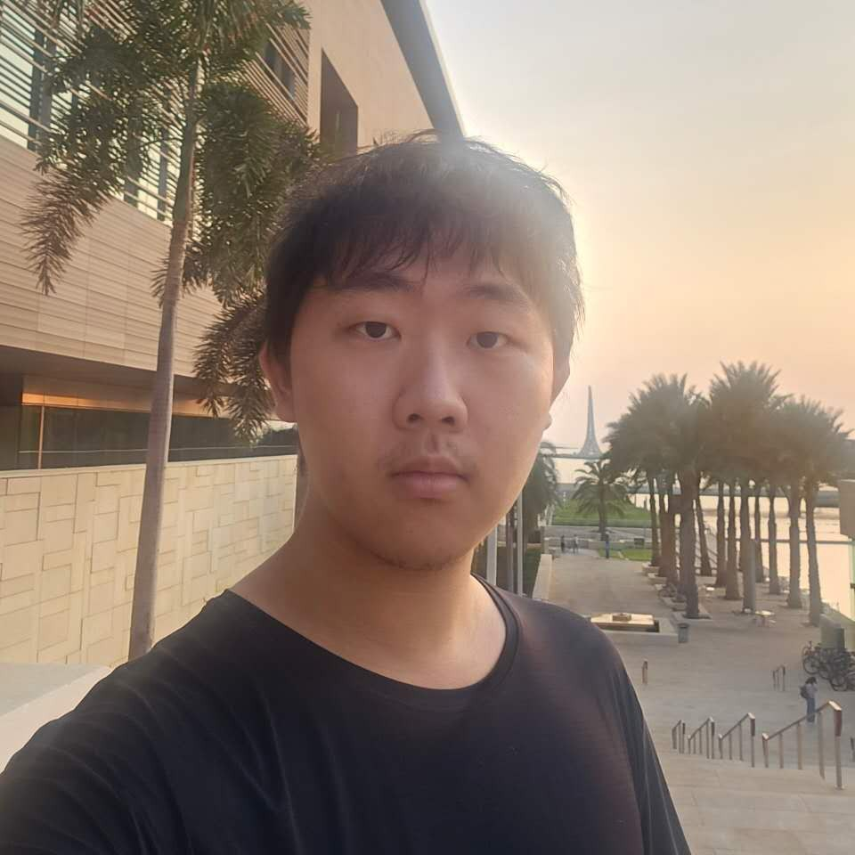

Xinhai Wang
Position: Master's Student in Computer Science
Institution: King Abdullah University of Science and Technology (KAUST)
Email: xinhai.wang@kaust.edu.sa
Google Scholar: View Citations
GitHub: View Projects
LinkedIn: View Profile
Publications
Towards Stable and Explainable Attention Mechanisms
The paper focused on enhancing the robustness and faithfulness of the attention mechanism by applying projected gradient descent (PGD) and aligning the model’s outputs more closely with the original attention-distribution.
Understanding How Value Neurons Shape the Generation of Specified Values in LLMs
This paper proposes ValueLocate framework for mechanistic analysis of values in LLMs and builds ValueInsight dataset and developed efficient neuron identification method using activation differences.
PAHQ: Accelerating Automated Circuit Discovery through Mixed-Precision Inference Optimization
This paper introduces PAHQ(Per Attention Head Quantization), a training-free, plug-and-play approach that optimizes each patching operation to accelerate automated circuit discovery in large language models.
Accelerating Suffix Jailbreak attacks with Prefix-Shared KV-cache
This paper proposes PSKV (Prefix-Shared KV cache), an efficient optimization for suffix jailbreak attacks on LLMs, reducing memory cost by ~30% and computation time by ~40%.
Efficient and Stable Grouped RL Training for Large Language Models
This paper introduces Infinite Sampling, a framework that decouples group size from GPU memory through micro sampling groups, continuous interleaved generation, and a length-aware scheduler.
Integrated Quantum Dot Lasers for Parallelized Photonic Edge Computing
This paper demonstrates a photonic computing unit with integrated quantum dot mode-locked lasers on silicon, achieving 1.7× higher scalability and significant improvements in computational density (>40%) and energy efficiency (~30%). This cross-layer framework bridges device innovation with system architecture and training algorithms for practical edge AI deployment.
Experience
MS Student
- Completed paper PAHQ: Accelerating Automated Circuit Discovery through Mixed-Precision Inference Optimization, Accelerating Suffix Jailbreak attacks with Prefix-Shared KV-cache,Efficient and Stable Grouped RL Training for Large Language Models and Understanding How Value Neurons Shape the Generation of Specified Values in LLMs.
Research Assistant, Prof. Di Wang's Group (KAUST)
- Served as a RA in KAUST assistant professor Di Wang's group.
- Completed paper Towards Stable and Explainable Attention Mechanisms.
RoboMaster Teammate
- Acquired foundational knowledge in machine learning and computer vision.
- Developed expertise in Python programming for computer vision applications.
NOIP Team Member
- Developed proficiency in C++ programming and algorithmic problem-solving.
Projects & Skills
Optoelectronic Hardware Acceleration for Variational Autoencoder
The project utilizes a micro-ring resonator (MRR)–based architecture to achieve high-speed, ultra-low-power matrix-vector multiplication. The system integrates data preprocessing, MRR crossbar-based multiplication, optical–electrical conversion, and electrical control. This work spans optical chip design, electrical control platform development, and optimization of hardware-friendly AI models.
CS283: MultiEdit Image-Text Editing Framework
Implemented MultiEdit, a two-stage image–text editing framework that decomposes complex instructions into iterative fine-grained edits. We integrated classifier-free guidance, null-text inversion, and adaptive mask generation to achieve seamless global transformations alongside precise local refinements.
Stanford CS143: Compiler Construction
Successfully completed the lexical analysis, syntactic analysis, and a portion of the semantic analysis components of the Cool language compiler.
CPU Building
Independently designed a CPU using Logisim software capable of executing all instructions from the MIPS-Lite instruction set. This CPU included the ALU, DM, ID, IM, GRM units, and the associated interconnections.